function y = g(x)
y = 2*x;
endfunctionModul 2 Persamaan Diferensial Numerik
Kembali ke Persamaan Diferensial Numerik
Plotting Fungsi
Sebelum mulai mempelajari metode-metode untuk menyelesaikan persamaan diferensial secara numerik, kita akan membahas terlebih dahulu tentang teknis plotting fungsi, juga sedikit tambahan materi mengenai fungsi.
Misalnya kita punya fungsi \(g(x)=2x\), suatu fungsi matematis (terkadang disebut “pure function” di dunia pemrograman). Ada dua cara untuk mendefinisikannya di Octave.
Cara pertama, yang sudah dibahas di pertemuan sebelumnya, adalah menggunakan keyword function:
Sehingga bisa dipanggil:
g(3)ans = 6Cara kedua, yang lebih praktis, adalah dengan membuat yang namanya anonymous function. Perhatikan syntax berikut:
g = @(x) 2*x;
g(3)ans = 6Terlihat lebih sederhana, dan cukup mirip dengan penulisan matematis \(g(x)=2x\). Sebutannya anonymous function karena sebenarnya fungsinya tidak memiliki nama yang tetap, kebetulan saja kali ini bisa diakses melalui variabel g yang menyimpannya. Secara umum, penulisannya adalah seperti berikut:
nama_fungsi = @(input1, input2, ..., input_terakhir) rumus;Sehingga misalnya kita bisa menuliskan fungsi \(h(x,y) = x^2 + y^3\), lalu menghitung \(h(4,5)\), sebagai berikut:
h = @(x,y) x^2 + y^3;
h(4,5)ans = 141Selanjutnya, kita akan membahas tentang plotting.
Misalkan kita memiliki titik-titik \((0,0)\), \((\frac{\pi}{2},1)\), \((\pi,0)\), dan \((\frac{3\pi}{2},-1)\). Kita bisa membuat dua array, yaitu satu array yang menyimpan tiap nilai x, dan satu lagi untuk menyimpan tiap nilai y.
Kemudian, kita bisa menggambar plot yang menyambung titik-titik tersebut dengan fungsi plot:
x = [0, pi/2, pi, 3*pi/2];
y = [0, 1, 0, -1];
plot(x,y)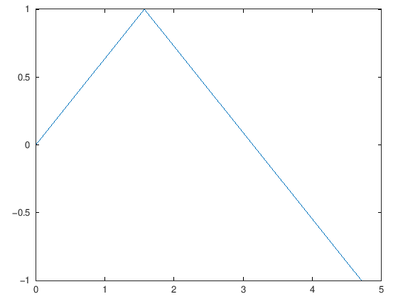
Titik-titik tersebut sebenarnya adalah hasil dari fungsi \(\sin(x)\) yang diterapkan pada nilai \(x=0, \frac{\pi}{2}, \pi, \frac{3\pi}{2}\).
Sebenarnya, kita bisa saja hanya membuat array nilai x, kemudian memperoleh array nilai y dengan memasukkan array x ke dalam fungsi \(\sin(x)\), agar tiap nilai pada array x diterapkan fungsi \(\sin(x)\). Penerapan fungsi pada tiap elemen array seperti itu sering disebut broadcasting.
x = [0, pi/2, pi, 3*pi/2];
y = sin(x);
plot(x,y)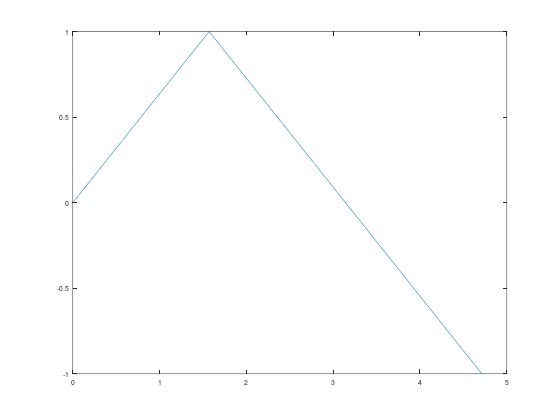
Untuk plot yang menyambung-nyambung titik-titik, plotnya sudah bagus. Namun, bagaimana kalau misalnya kita ingin membuat plot fungsi \(\sin(x)\) itu sendiri, misalnya pada interval \([0,5]\)?
Caranya, kita tinggal memperbanyak titik di array x tersebut, agar lebih presisi. Makin banyak titiknya, makin akurat gambarnya.
Tenang saja, kita tidak perlu pegal-pegal mengetik titik-titik \([0, 0.1, 0.2, ..., 4.9, 5]\). Di Octave, ada syntax untuk membuat array dari titik-titik pada interval \([a,b]\) dengan step size \(h\), yaitu sebagai berikut:
nama_array = a : h : bMisalnya, untuk menyimpan titik-titik pada interval \([0,5]\) dengan step size 0.1, ketik:
x = 0 : 0.1 : 5x =
Columns 1 through 8:
0 0.1000 0.2000 0.3000 0.4000 0.5000 0.6000 0.7000
Columns 9 through 16:
0.8000 0.9000 1.0000 1.1000 1.2000 1.3000 1.4000 1.5000
Columns 17 through 24:
1.6000 1.7000 1.8000 1.9000 2.0000 2.1000 2.2000 2.3000
Columns 25 through 32:
2.4000 2.5000 2.6000 2.7000 2.8000 2.9000 3.0000 3.1000
Columns 33 through 40:
3.2000 3.3000 3.4000 3.5000 3.6000 3.7000 3.8000 3.9000
Columns 41 through 48:
4.0000 4.1000 4.2000 4.3000 4.4000 4.5000 4.6000 4.7000
Columns 49 through 51:
4.8000 4.9000 5.0000
Sehingga, kita bisa membuat plot \(\sin(x)\) pada interval \([0,5]\) seperti berikut:
x = 0 : 0.1 : 5;
y = sin(x);
plot(x,y)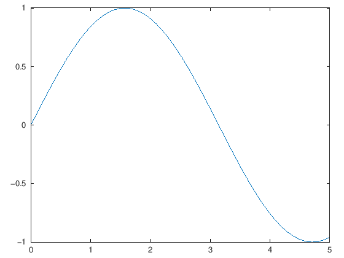
Kita bisa menambahkan judul pada plot dengan title
x = 0 : 0.1 : 5;
y = sin(x);
plot(x,y);
title("Sinus pada [0,5]");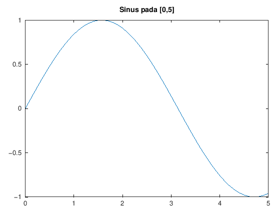
Warnanya bisa ditentukan, misal menjadi merah (‘r’), hijau (‘g’), atau biru (‘b’), dengan menambah keterangan di plot
x = 0 : 0.1 : 5;
y = sin(x);
plot(x, y, 'r')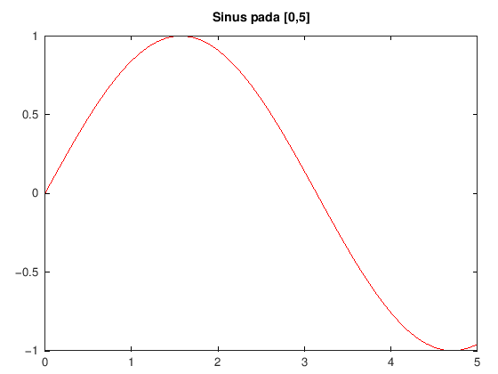
Kalau mau, kita bisa mem-plot titik-titiknya saja (tanpa disambung-sambung), menggunakan scatter:
x = 0 : 0.1 : 5;
y = sin(x);
scatter(x,y)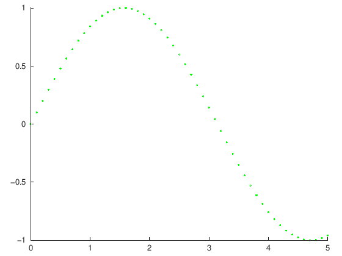
Seperti di plot, kita juga bisa menentukan warna di scatter:
x = 0 : 0.1 : 5;
y = sin(x);
scatter(x, y, 'g')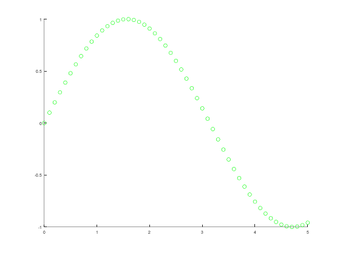
Sebenarnya, ada cara yang lebih otomatis untuk mem-plot fungsi, yaitu menggunakan fplot. Kita tinggal memberikan:
- fungsi yang ingin dibuat gambarnya
- interval \([a,b]\) yang kita inginkan
- (opsional) warna yang kita inginkan
f = @(x) sin(x);
fplot(f, [0, 5], 'r')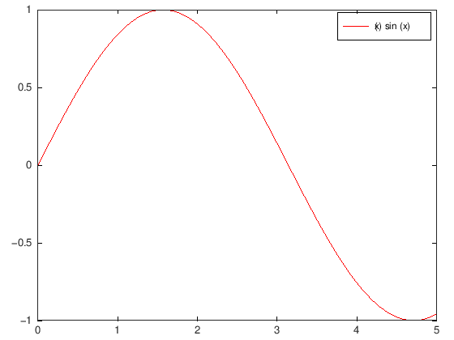
Namun, cara ini khusus fungsi kontinu, bahkan langsung menambahkan keterangan yang belum tentu sesuai dengan yang kita inginkan. Agar lebih fleksibel, kita akan lebih sering menggunakan cara manual saja, yaitu dengan membuat array x, menghitung array y, dan memanggil plot.
Kita coba contoh lain yuk! Misalnya kita ingin membuat plot dari fungsi \(f(x) = x^3\) pada interval \([-1,1]\). Kita bisa coba definisikan fungsinya dulu, lalu buat array x dan y nya:
f = @(x) x^3;
x = 0 : 0.1 : 5;
y = f(x);error: for x^y, only square matrix arguments are permitted and one argument must be scalar. Use .^ for elementwise power.
error: called from
@<anonymous> at line 1 column 11Lho, kok error?
Perhatikan bahwa kita memasukkan array x ke dalam fungsi \(f(x) = x^3\). Untuk contoh yang tadi, fungsi \(\sin(x)\), ketika kita memasukkan array x, Octave paham bahwa tiap nilai pada array perlu diterapkan fungsi \(\sin\).
Namun, kali ini, Octave melihat bahwa ada array yang dipangkatkan tiga. Octave memandang array sebagai matriks dengan satu baris saja (atau satu kolom saja), sehingga Octave mencoba melakukan parpangkatan matriks. Padahal, syarat perpangkatan matriks adalah matriksnya harus persegi. Array ini bukanlah matriks persegi, sehingga jadilah error.
Lalu, bagaimana cara memberi tahu Octave bahwa perpangkatan yang kita maksud adalah perpangkatan per elemen (elementwise)?
Ada syntax khusus untuk itu, yaitu menggunakan .^ daripada ^
Mari kita coba lagi, kali ini membuat plot dengan step size 0.05:
f = @(x) x.^3;
x = -1 : 0.05 : 1;
y = f(x);
plot(x,y)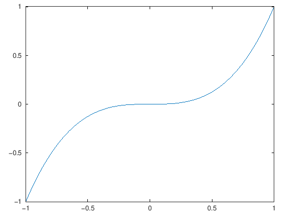
Fun fact: apabila ingin menggunakan fplot (daripada plot) untuk mem-plot suatu fungsi, dan apabila ada perpangkatan di dalam definisi fungsi tersebut, maka penulisannya juga harus menggunakan .^ daripada ^
Bagaimana kalau kita mau plot lebih dari satu fungsi? Kita tetap membuat satu array x saja, lalu membuat array y untuk tiap fungsi, seperti berikut:
x = -1 : 0.05 : 1;
y1 = sin(x);
y2 = cos(x);
y3 = tan(x);
hold on;
plot(x, y1, 'r');
plot(x, y2, 'g');
plot(x, y3, 'b');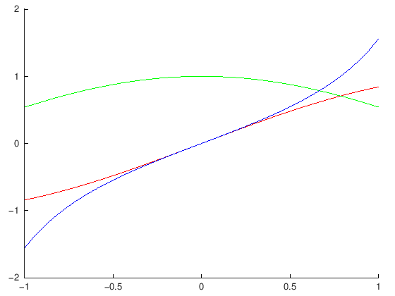
Ada baris hold on. Apa itu?
Baris itu memastikan bahwa semua plot tetap di satu window yang sama, sehingga di satu gambar yang sama (daripada terpisah-pisah).
(Kalian bisa coba, kalau tidak ada baris hold on, maka plot fungsi \(\sin\), \(\cos\), dan \(\tan\) akan terpisah semua)
Nantinya, kalian juga bisa menambahkan baris hold off kalau kalian ingin plot selanjutnya buka di window yang baru lagi.
Kita juga bisa menambahkan legenda (legend) atau keterangan, seperti berikut. Tuliskan keterangannya secara berurutan, sesuai dengan urutan mem-plot fungsi.
x = -1 : 0.05 : 1;
y1 = sin(x);
y2 = cos(x);
y3 = tan(x);
hold on;
plot(x, y1, 'r');
plot(x, y2, 'g');
plot(x, y3, 'b');
legend("Sinus", "Kosinus", "Tangen");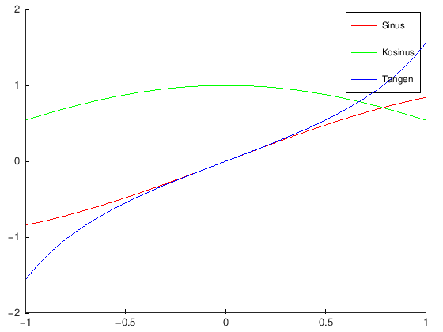
Sedikit tambahan, kita bisa menyimpan fungsi ke dalam sejenis array yang khusus (sehingga bisa diakses melalui indeks), yang bernama cell array.
Misalnya kita ingin menyimpan fungsi \(f(x)=3x^2\), \(g(x)=6\) (fungsi konstan), dan \(h(x,y) = \sin(x) + \cos(y)\), di dalam satu cell array bernama array_fungsi. Penulisannya menggunakan kurung kurawal { } dan indeksnya juga menggunakan kurung kurawal, seperti berikut:
f = @(x) 3 * x.^2;
g = @(x) 6;
h = @(x,y) sin(x) + cos(y);
array_fungsi = {f, g, h};
array_fungsi{3}(pi/2, 0)ans = 2Perhatikan bahwa kita bisa mengindeks cell array tersebut untuk memperoleh suatu fungsi yang kemudian langsung bisa dipanggil. Misalnya, dipilih indeks ketiga yaitu fungsi \(h(x,y)\), kemudian langsung dipanggil dengan \(x=\frac{\pi}{2}\) dan \(y=0\).
Sebenarnya, cell array ini adalah sejenis array yang bisa menyimpan apapun (tidak seperti array biasa yang hanya bisa menyimpan nilai numerik).
test_cell = {9, 8, 7};
test_cell{2} * 3ans = 24Namun, broadcasting tidak berlaku pada cell array, sehingga cell array jarang digunakan (toh Octave paling sering digunakan untuk perhitungan numerik).
Array biasa dan cell array di Octave, bagaikan array numpy dan list di Python.
Metode Euler
Metode Euler adalah metode paling dasar dalam mencari solusi dari permasalahan nilai awal dari suatu PD.
Misalkan kita mempunyai suatu persamaan diferensial dengan nilai awal:
\[y^{\prime}=f(t, y), a \leq t \leq b\] \[y(a)=\alpha\]
maka solusi secara numeriknya adalah \(w_i= y(t_i)\), dengan:
\[w_1=\alpha\] \[w_{i+1}=w_i+h f\left(t_i, w_i\right), \quad i=1,2, \ldots, N\]
dengan \(N+1\in \mathbb{N}\) menyatakan banyaknya titik nantinya.
Solusi kita akan berupa titik yang nantinya dapat menggunakan interpolasi untuk nilai yang tidak dimuat di \(w_i\)
Metode Euler juga bisa ditulis:
\[w_1=\alpha\]
diikuti iterasi untuk \(i=1,2, \ldots, N\),
\[m_1 = f\left(t_i, w_i\right)\] \[w_{i+1}=w_i+h m_1\]
Metode Euler membutuhkan
- fungsi \(f\left(t,y\right)\) dalam MNA \(y' = f\left(t,y\right)\)
- interval \([a,b]\)
- niali \(N\), agar digunakan \(N+1\) titik, yaitu sebagai pembagi dalam perhitungan step size \(h = \frac{b-a}{N}\)
- \(\alpha\) (alpha) sebagai nilai awal dalam \(y(a) = \alpha\)
sehingga programnya (fungsi metode Euler) bisa ditulis sebagai berikut:
function [t, w] = euler(f, a, b, N, alpha)
h = (b - a) / N;
t = zeros(N + 1, 1);
w = zeros(N + 1, 1);
t(1) = a;
w(1) = alpha;
for i = 1 : N
t(i + 1) = t(i) + h;
m1 = f(t(i), w(i));
w(i + 1) = w(i) + h * m1;
endfor
endfunctionSekarang akan kita coba gunakan untuk menyelesaikan suatu MNA (masalah nilai awal) PDB orde 1. Misal diberikan MNA sebagai berikut:
\[y^{\prime}=y-t^2+1\] \[0 \leq t \leq 2\] \[y(0)=0.5\]
maka kita dapat mendefinisikan
f = @(t, y) y-t^2+1,- a=0,
- b=2, dan
- alpha \(=0.5\)
sehingga untuk \(N=10\), diperoleh kode dan hasil sebagai berikut:
f = @(t, y) (y-t^2 + 1);
a = 0;
b = 2;
N = 10;
alpha= 0.5;
[t_euler, w_euler] = euler(f, a, b, N, alpha);[t_euler, w_euler]ans =
0 0.5000
0.2000 0.8000
0.4000 1.1520
0.6000 1.5504
0.8000 1.9885
1.0000 2.4582
1.2000 2.9498
1.4000 3.4518
1.6000 3.9501
1.8000 4.4282
2.0000 4.8658
Untuk visualisasinya, kita akan membuat plot dari hasil yang kita peroleh. Sebagai referensi, solusi eksak dari MNA tersebut adalah
\[y(t)=(t+1)^2- 0.5 e^t\]
Kita tambahkan kode berikut pada file, untuk membandingkan plot solusi eksak (fungsinya kita simpan dalam variabel sln atau solution) dengan plot dari titik-titik hasil algoritma.
sln = @(t) (t + 1).^2 - 0.5 * exp(t);
hold on;
fplot(sln, [0, 2], 'b');
scatter(t_euler, w_euler, 'r');
legend('Solusi eksak', 'Metode Euler');
title("Metode Euler");
Saat dijalankan, akan muncul jendela pop-up yang berisi plot yang telah dibuat.
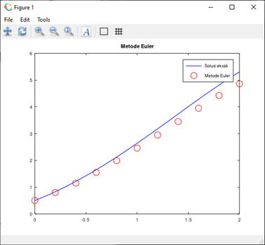
Penjelasan:
- sln berisi fungsi referensi kita untuk di-plot dan dibandingkan.
- fplot(f, [a, b]) akan menampilkan plot dari suatu fungsi f dengan domain [a, b]. Argumen tambahan ‘b’ memberi warna biru pada plot.
- hold on akan menahan plot yang ada agar kita bisa menampilkan banyak plot sekaligus.
- scatter(x, y) akan menampilkan x-y scatter plot.
- legend memberi legenda/keterangan pada plot yang telah dibuat. Legenda tersebut dimasukkan berurutan mulai dari plot yang didefinsikan terlebih dahulu
- title memberi judul pada plot
Kita juga bisa menghitung error mutlak. Secara keseluruhan, kodenya menjadi seperti berikut.
% stup
f = @(t, y) (y-t^2 + 1);
a = 0;
b = 2;
N = 10;
alpha= 0.5;
% hitung metode Euler
[t_euler, w_euler] = euler(f, a, b, N, alpha);
% solusi eksak
sln = @(t) (t + 1).^2 - 0.5 * exp(t);
y_eksak = sln(t_euler); % hitung solusi eksak di tiap titik t
% error: nilai mutlak dari selisih
err_euler = abs(w_euler - y_eksak);
% tampilkan sejumlah kolom menjadi seperti tabel
[t_euler, w_euler, y_eksak, err_euler]
% plotting
hold on;
fplot(sln, [0, 2], 'b');
scatter(t_euler, w_euler, 'r');
legend('Solusi eksak', 'Metode Euler');
title("Metode Euler");ans =
0 0.5000 0.5000 0
0.2000 0.8000 0.8293 0.0293
0.4000 1.1520 1.2141 0.0621
0.6000 1.5504 1.6489 0.0985
0.8000 1.9885 2.1272 0.1387
1.0000 2.4582 2.6409 0.1827
1.2000 2.9498 3.1799 0.2301
1.4000 3.4518 3.7324 0.2806
1.6000 3.9501 4.2835 0.3334
1.8000 4.4282 4.8152 0.3870
2.0000 4.8658 5.3055 0.4397
Metode Taylor orde \(n\)
Metode Taylor orde \(n\) adalah perluasan dari metode Euler (di mana metode Taylor orde 1 sama saja dengan metode Euler). Rumus iterasinya bisa ditulis sebagai berikut:
\[w_1 = \alpha\]
\[\begin{align*} T^{(n)} \left(t_i, w_i\right) &= f\left(t_i, w_i\right) + \frac{h}{2}f'\left(t_i, w_i\right) + \cdots + \frac{h^{n-1}}{n!} f^{\left(n-1\right)} \left(t_i,w_i\right) \\ \end{align*}\]
\[w_{i+1} = w_i + hT^{(n)} \left(t_i, w_i\right) \]
Perhatikan bahwa, dengan metode Taylor orde \(n\), kita perlu memperoleh terlebih dahulu rumus analitik untuk sejumlah turunan (terhadap \(t\)) dari \(f\left(t_i, w_i\right)\) yaitu \(f', f'', \dots, f^{(n-1)}\).
Kebetulan, untuk metode Euler, yaitu metode Taylor orde 1 (\(n=1\)), kita tidak perlu menghitung turunan fungsinya sama sekali.
Untuk mempermudah pemrograman, kita coba tulis ulang rumus \(T^{(n)} \left(t_i, w_i\right)\) dengan sumasi:
\[\begin{align*} T^{(n)} \left(t_i, w_i\right) &= f\left(t_i, w_i\right) + \frac{h}{2}f'\left(t_i, w_i\right) + \cdots + \frac{h^{n-1}}{n!} f^{\left(n-1\right)} \left(t_i,w_i\right) \\ &= \sum_{j=1}^{n} \frac{h^{j-1}}{j!} f^{\left(j-1\right)} \left(t_i,w_i\right) \\ &= f\left(t_i,w_i\right) + \sum_{j=2}^{n} \frac{h^{j-1}}{j!} f^{\left(j-1\right)} \left(t_i,w_i\right) \end{align*}\]
Dengan demikian, kita bisa menyimpan fungsi-fungsi \(f', f'', \dots, f^{(n-1)}\) di dalam suatu cell array, misal dinamakan fp, sehingga
- kita bisa mengakses turunan ke-\(i\) dengan menulis
fp{i} - orde \(n\) untuk metode Taylor bisa ditentukan menggunakan panjang cell array tersebut, yaitu
n = length(fp) + 1; - jika cell array kosong (tidak ada fungsi turunan), otomatis \(n=1\) dan algoritmanya menjadi sama saja dengan metode Euler (sesuai harapan)
- penjumlahannya bisa menggunakan for loop sederhana
- kita cukup mendefinisikan fungsi metode Taylor ini sekali saja di Octave, daripada harus membuat definisi terpisah untuk orde 2, orde 3, orde 4, dan seterusnya (di mana banyaknya fungsi turunan memang berbeda)
Setelah manipulasi tersebut, secara keseluruhan, metode Taylor orde \(n\) bisa ditulis:
\[w_1 = \alpha\]
\[\begin{align*} T^{(n)} \left(t_i, w_i\right) &= f\left(t_i, w_i\right) + \frac{h}{2}f'\left(t_i, w_i\right) + \cdots + \frac{h^{n-1}}{n!} f^{\left(n-1\right)} \left(t_i,w_i\right) \\ &= \sum_{j=1}^{n} \frac{h^{j-1}}{j!} f^{\left(j-1\right)} \left(t_i,w_i\right) \\ &= f\left(t_i,w_i\right) + \sum_{j=2}^{n} \frac{h^{j-1}}{j!} f^{\left(j-1\right)} \left(t_i,w_i\right) \end{align*}\]
\[w_{i+1} = w_i + hT^{(n)} \left(t_i, w_i\right) \]
Atau lebih singkatnya:
\[w_1 = \alpha\]
\[T^{(n)} \left(t_i, w_i\right) = f\left(t_i,w_i\right) + \sum_{j=2}^{n} \frac{h^{j-1}}{j!} f^{\left(j-1\right)} \left(t_i,w_i\right)\]
\[w_{i+1} = w_i + hT^{(n)} \left(t_i, w_i\right) \]
function [t, w] = taylor(f, fp, a, b, N, alpha)
h = (b - a) / N;
n = length(fp) + 1;
t = zeros(n + 1, 1);
w = zeros(n + 1, 1);
t(1) = a;
w(1) = alpha;
for i = 1 : N
t(i + 1) = t(i) + h;
T = f(t(i), w(i));
for j = 2 : n
T += h^(j-1) * fp{j-1}(t(i),w(i)) / factorial(j);
endfor
w(i + 1) = w(i) + h * T;
endfor
endfunctionContoh penggunaan:
Misalkan diberikan MNA sebagai berikut, yang diminta untuk diselesaikan secara numerik dengan metode Taylor orde 4:
\[y' = y - t^2 + 1\] \[0 \le t \le 2\] \[y(0) = 0.5\]
Maka, dengan \(y' = f\left(t, y\right) = y - t^2 + 1\), bisa dihitung:
\[f'\left(t, y\right) = y - t^2 + 1 - 2t\]
\[f''\left(t, y\right) = y - t^2 - 2t - 1\]
\[f^{(3)}\left(t, y\right) = y - t^2 - 2t - 1, \hspace{0.2cm} \text{kebetulan sama persis dengan} \hspace{0.2cm} f''\left(t, y\right)\]
% contoh pakai: subbab 5.3 example 1b (orde 4)
% f(t_i, w_i)
f0 = @(t,y) y - t^2 + 1;
% f'(t_i, w_i)
f1 = @(t,y) y - t^2 + 1 - 2*t;
% f''(t_i, w_i)
f2 = @(t,y) y - t^2 - 2*t - 1;
% f'''(t_i, w_i)
f3 = @(t,y) y - t^2 - 2*t - 1;
% hitung pada interval [0,2], N=10, y(0)=alpha=0.5
[t, w] = taylor(f0, {f1, f2, f3}, 0, 2, 10, 0.5);
% otomatis Taylor orde 4 karena
% ada tiga fungsi turunan f1, f2, f3
% yang diinput di cell array
% bandingkan dengan Tabel 5.4
[t, w]ans =
0 0.5000
0.2000 0.8293
0.4000 1.2141
0.6000 1.6489
0.8000 2.1272
1.0000 2.6409
1.2000 3.1800
1.4000 3.7324
1.6000 4.2835
1.8000 4.8152
2.0000 5.3056
Untuk plotnya, kita bisa membandingkan antara solusi eksak, metode Euler, dan metode Taylor orde 4:
% fungsi f(t,y) dan turunan pertama, kedua, ketiga
f0 = @(t,y) y - t^2 + 1;
f1 = @(t,y) y - t^2 + 1 - 2*t;
f2 = @(t,y) y - t^2 - 2*t - 1;
f3 = @(t,y) y - t^2 - 2*t - 1;
a = 0;
b = 2;
N = 10;
alpha = 0.5;
% menghitung metode Euler dan metode Taylor orde 4
[t_euler, w_euler] = euler(f, a, b, N, alpha);
[t_taylor, w_taylor] = taylor(f, {f1,f2,f3}, a, b, N, alpha);
% solusi eksak
sln = @(t) (t + 1).^2 - 0.5 * exp(t);
% plotting
hold on;
fplot(sln, [0,2], 'b');
scatter(t_euler, w_euler, 'r');
scatter(t_taylor, w_taylor, 'g');
legend("Solusi Eksak", "Metode Euler", "Metode Taylor");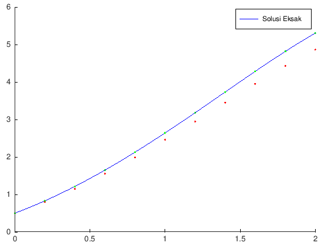
Metode Runge-Kutta dan variasinya
Orde 2: Metode Midpoint
\[w_1=\alpha\] \[w_{i+1}=w_i+h f\left(t_i+\frac{h}{2}, w_i+\frac{h}{2} f\left(t_i, w_i\right)\right)\]
bisa juga ditulis,
\[w_1=\alpha\] \[m_1 = f\left(t_i, w_i\right)\] \[w_{i+1}=w_i+h f\left(t_i+\frac{h}{2}, w_i+\frac{h}{2} m_1\right)\]
atau bahkan,
\[w_1=\alpha\] \[m_1 = f\left(t_i, w_i\right)\] \[m_2 = f\left(t_i+\frac{h}{2}, w_i+\frac{h}{2} m_1\right)\] \[w_{i+1}=w_i+h m_2\]
function [t, w] = midpoint(f, a, b, N, alpha)
h = (b - a) / N;
t = zeros(N + 1, 1);
w = zeros(N + 1, 1);
t(1) = a;
w(1) = alpha;
for i = 1 : N
t(i + 1) = t(i) + h;
m1 = f(t(i), w(i));
m2 = f(t(i) + (h / 2), w(i) + (h / 2) * m1);
w(i + 1) = w(i) + h * m2;
endfor
endfunctionOrde 2: Metode Modified Euler
\[w_1=\alpha\] \[w_{i+1}=w_i+\frac{h}{2}\left(f\left(t_i, w_i\right)+f\left(t_{i+1}, w_i+h f\left(t_i, w_i\right)\right)\right)\]
bisa juga ditulis,
\[w_1=\alpha\] \[m_1 = f\left(t_i, w_i\right)\] \[w_{i+1}=w_i+\frac{h}{2}\left(m_1+f\left(t_{i+1}, w_i+h m_1\right)\right)\]
atau bahkan,
\[w_1=\alpha\] \[m_1 = f\left(t_i, w_i\right)\] \[m_2 = f\left(t_{i+1}, w_i+h m_1\right)\] \[w_{i+1}=w_i+\frac{h}{2}\left(m_1+m_2\right)\]
function [t, w] = modified_euler(f, a, b, N, alpha)
h = (b - a) / N;
t = zeros(N + 1, 1);
w = zeros(N + 1, 1);
t(1) = a;
w(1) = alpha;
for i = 1 : N
t(i + 1) = t(i) + h;
m1 = f(t(i), w(i));
m2 = f(t(i + 1), w(i) + h * m1);
w(i + 1) = w(i) + h * (m1 + m2) / 2;
endfor
endfunctionOrde 3: Metode Heun
\[w_1=\alpha\] \[w_{i+1}=w_i+\frac{h}{4}\left(f\left(t_i, w_i\right)+3 f\left(t_i+\frac{2 h}{3}, w_i+\frac{2 h}{3} f\left(t_i+\frac{h}{3}, w_i+\frac{h}{3} f\left(t_i, w_i\right)\right)\right)\right)\]
bisa juga ditulis,
\[w_1=\alpha\] \[m_1 = f\left(t_i, w_i\right)\] \[w_{i+1}=w_i+\frac{h}{4}\left(m_1+3 f\left(t_i+\frac{2 h}{3}, w_i+\frac{2 h}{3} f\left(t_i+\frac{h}{3}, w_i+\frac{h}{3} m_1\right)\right)\right)\]
atau,
\[w_1=\alpha\] \[m_1 = f\left(t_i, w_i\right)\] \[m_2 = f\left(t_i+\frac{h}{3}, w_i+\frac{h}{3} m_1\right)\] \[w_{i+1}=w_i+\frac{h}{4}\left(m_1+3 f\left(t_i+\frac{2 h}{3}, w_i+\frac{2 h}{3} m_2\right)\right)\]
atau bahkan,
\[w_1=\alpha\] \[m_1 = f\left(t_i, w_i\right)\] \[m_2 = f\left(t_i+\frac{h}{3}, w_i+\frac{h}{3} m_1\right)\] \[m_3 = f\left(t_i+\frac{2 h}{3}, w_i+\frac{2 h}{3} m_2\right)\] \[w_{i+1}=w_i+\frac{h}{4}\left(m_1+3 m_3\right)\]
function [t, w] = heun(f, a, b, N, alpha)
h = (b - a) / N;
t = zeros(N + 1, 1);
w = zeros(N + 1, 1);
t(1) = a;
w(1) = alpha;
for i = 1 : N
t(i + 1) = t(i) + h;
m1 = f(t(i), w(i));
m2 = f(t(i) + (h / 3), w(i) + (h / 3) * m1);
m3 = f(t(i) + (2 * h / 3), w(i) + (2 * h / 3) * m2);
w(i + 1) = w(i) + (h / 4) * (m1 + 3 * m3);
endfor
endfunctionMetode Runge-Kutta orde 4
\[w_1=\alpha\] \[k_1=h f\left(t_i, w_i\right)\] \[k_2=h f\left(t_i+\frac{h}{2}, w_i+\frac{k_1}{2}\right)\] \[k_3=h f\left(t_i+\frac{h}{2}, w_i+\frac{k_2}{2}\right)\] \[k_4=h f\left(t_{i+1}, w_i+k_3\right)\] \[w_{i+1}=w_i+\frac{1}{6}\left(k_1+2 k_2+2 k_3+k_4\right)\]
function [t, w] = rko4(f, a, b, N, alpha)
h = (b - a) / N;
t = zeros(N + 1, 1);
w = zeros(N + 1, 1);
t(1) = a;
w(1) = alpha;
for i = 1 : N
t(i + 1) = t(i) + h;
k1 = h * f(t(i), w(i));
k2 = h * f(t(i) + (h / 2), w(i) + (k1 / 2));
k3 = h * f(t(i) + (h / 2), w(i) + (k2 / 2));
k4 = h * f(t(i + 1), w(i) + k3);
w(i + 1) = w(i) + (k1 + 2 * k2 + 2 * k3 + k4) / 6;
endfor
endfunctionContoh penggunaan
Misalkan diberikan MNA sebagai berikut:
\[y' = y - t^2 + 1\] \[0 \le t \le 2\] \[y(0) = 0.5\]
f = @(t, y) (y - t .^ 2 + 1);
a = 0;
b = 2;
alpha = 0.5;
[t1, w1] = midpoint(f, a, b, 10, alpha);
[t2, w2] = modified_euler(f, a, b, 10, alpha);
[t3, w3] = heun(f, a, b, 10, alpha);
[t4, w4] = rko4(f, a, b, 10, alpha);
sln = @(t) (t + 1) .^ 2 - 0.5 * exp(t);
t5 = linspace(a, b, 11);
w5 = sln(t5);[t1, w1, w2, w3, w4, w5']ans =
0 0.5000 0.5000 0.5000 0.5000 0.5000
0.2000 0.8280 0.8260 0.8292 0.8293 0.8293
0.4000 1.2114 1.2069 1.2140 1.2141 1.2141
0.6000 1.6447 1.6372 1.6488 1.6489 1.6489
0.8000 2.1213 2.1102 2.1270 2.1272 2.1272
1.0000 2.6332 2.6177 2.6406 2.6408 2.6409
1.2000 3.1705 3.1496 3.1796 3.1799 3.1799
1.4000 3.7212 3.6937 3.7320 3.7323 3.7324
1.6000 4.2706 4.2351 4.2830 4.2834 4.2835
1.8000 4.8010 4.7556 4.8147 4.8151 4.8152
2.0000 5.2904 5.2331 5.3050 5.3054 5.3055
fplot(sln, [0, 2], 'k');
hold on;
scatter(t1, w1, 'r');
scatter(t2, w2, 'g');
scatter(t3, w3, 'b');
scatter(t4, w4, 'm');
legend('Fungsi eksak', 'Midpoint', 'Modified Euler', 'Heun',
'Runge-Kutta orde 4');
legend("location", "northwest");
title('Perbandingan metode Runge-Kutta');